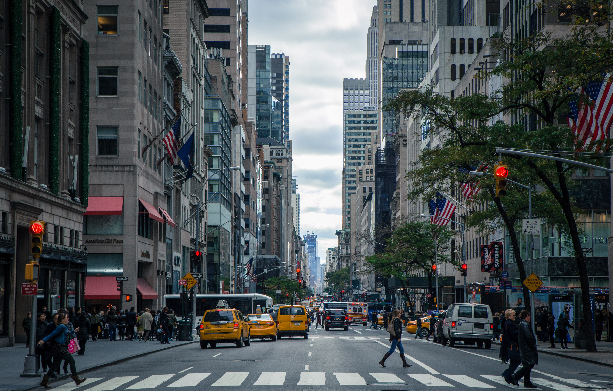

5 Days in New York: The Ultimate New York City Itinerary
10.1.2018
New York City is massive and the list of places to visit is long. We have been visiting New York City on a regular basis for the past 20 years. I went to graduate school in New Jersey and Tim and I would frequently day trip into the city. Since then, we try to visit New York City once a year, simply because we love this city. To me, New York feels more like home than Baltimore, the city where I was born and raised.
One World Trade Center is the sixth tallest building in the world and the tallest building in the western hemisphere. This skyscraper stands next to the footprints of the original World Trade Center buildings that were destroyed in the 9/11 terrorist attacks.
The One World Observatory is a great place to take in your first view of New York City. From here, you have awesome views of Manhattan, the Statue of Liberty, Brooklyn, Staten Island, and New Jersey. Plus, by being here early in the day, you get to beat the crowds and have a more pleasant experience.
I read somewhere recently that Central Park is the most visited tourist attraction in the world. Therefore a visit to New York City would not be complete without at least a quick stroll through part of the park.
Central Park is much more than a tourist destination. For New Yorkers, this is a treasured green space, a spot to lie out in the sun, go for a run, and take the kids to the playground.
Spend part of the afternoon exploring Central Park. You can simply wander through it on your own two feet, rent bikes and cycle a lap or two through the entire park, or do something very touristy and go for a horse and buggy ride. There are numerous places to rent bikes just outside of the park. We have the best luck one block south of the park around 5th and 6th avenue.

If it’s your first time in New York, the Statue of Liberty is a must see. You can visit just the Statue of Liberty or you can visit the Statue of Liberty and Ellis Island together as a round trip excursion from Manhattan.
Start the day with a trip up the Empire State Building. Completed in 1931, this was the tallest building in the world for 40 years until the North Tower of the World Trade Center was completed in 1970. The Empire State Building has been featured in over 250 TV shows and movies and is listed as one of the Seven Wonders of the Modern World.